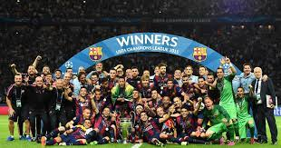
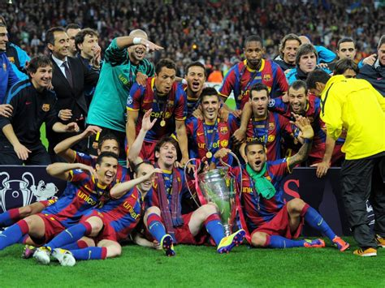

BARCELONA GANHA DE 3X1 DO MANCHESTER UNITE-2010/11
O jogo da final da Champions de 2010/11 foi marcado pelo futebol quase perfeito do Barcelona. Comandados pelo Pep Guardiola, o elenco do Barça foi superior aos diabos vermelhos em todas as linhas.

Campeões. Foi jogada no Estádio de Wembley, em Londres, na Inglaterra, em 28 de Maio de 2011. Com isso o estádio inglês tornou-se o recordista de finais da Liga dos Campeões, sediando-a pela sexta vez após 1963, 1968, 1971, 1978 e 1992.
O jogo acanteceu no dia 28 de maio de 2011, com o barcelona ganhando o jogo de 3x1, os glos foram marcados pelos jogadores:Pedro, aos 26 minutos, Rooney, aos 34 minutos do primeiro tempo; Messi, aos oito minutos, David Villa, aos 23 minutos do segundo tempo.

⚡️⚡️⚡️⚡️⚡️⚡️⚡️⚡️⚡️⚡️⚡️⚡️⚡️⚡️⚡️⚡️⚡️⚡️⚡️⚡️⚡️⚡️⚡️⚡️⚡️⚡️⚡️⚡️⚡️⚡️⚡️⚡️⚡️⚡️⚡️⚡️⚡️⚡️⚡️⚡️⚡️⚡️⚡️⚡️⚡️⚡️⚡️⚡️⚡️⚡️⚡️⚡️⚡️⚡️⚡️⚡️⚡️⚡️⚡️⚡️⚡️⚡️⚡️⚡️⚡️⚡️⚡️⚡️⚡️⚡️⚡️⚡️⚡️⚡️⚡️⚡️⚡️⚡️⚡️⚡️⚡️⚡️⚡️⚡️⚡️⚡️⚡️⚡️⚡️⚡️⚡️⚡️⚡️⚡️⚡️⚡️⚡️⚡️⚡️⚡️⚡️⚡️⚡️⚡️⚡️⚡️⚡️⚡️⚡️⚡️⚡️⚡️⚡️⚡️⚡️⚡️⚡️⚡️⚡️⚡️⚡️⚡️⚡️⚡️⚡️⚡️⚡️⚡️⚡️⚡️⚡️⚡️⚡️⚡️⚡️⚡️⚡️⚡️⚡️⚡️⚡️⚡️⚡️⚡️⚡️⚡️⚡️⚡️⚡️⚡️⚡️⚡️⚡️⚡️⚡️⚡️⚡️⚡️⚡️⚡️⚡️⚡️⚡️⚡️⚡️⚡️⚡️⚡️⚡️⚡️⚡️⚡️⚡️⚡️⚡️⚡️⚡️⚡️⚡️⚡️⚡️⚡️⚡️⚡️⚡️⚡️⚡️⚡️⚡️⚡️⚡️⚡️⚡️⚡️⚡️⚡️
Os gols foram marcados pelos jogadores:
Pedro Rodríguez abre o jogo para o barcelona aos 27'
Logo em seguida Ronney marca pelo united aos 34' empatando o jogo
No segundo tempo Messi desempata o jogo aos 54'
E para fechar o jogo Villa marca o ultimo gol aos 69'
⚡️⚡️⚡️⚡️⚡️⚡️⚡️⚡️⚡️⚡️⚡️⚡️⚡️⚡️⚡️⚡️⚡️⚡️⚡️⚡️⚡️⚡️⚡️⚡️⚡️⚡️⚡️⚡️⚡️⚡️⚡️⚡️⚡️⚡️⚡️⚡️⚡️⚡️⚡️⚡️⚡️⚡️⚡️⚡️⚡️⚡️⚡️⚡️⚡️⚡️⚡️⚡️⚡️⚡️⚡️⚡️⚡️⚡️⚡️⚡️⚡️⚡️⚡️⚡️⚡️⚡️⚡️⚡️⚡️⚡️⚡️⚡️⚡️⚡️⚡️⚡️⚡️⚡️⚡️⚡️⚡️⚡️⚡️⚡️⚡️⚡️⚡️⚡️⚡️⚡️⚡️⚡️⚡️⚡️⚡️⚡️⚡️⚡️⚡️⚡️⚡️⚡️⚡️⚡️⚡️⚡️⚡️⚡️⚡️⚡️⚡️⚡️⚡️⚡️⚡️⚡️⚡️⚡️⚡️⚡️⚡️⚡️⚡️⚡️⚡️⚡️⚡️⚡️⚡️⚡️⚡️⚡️⚡️⚡️⚡️⚡️⚡️⚡️⚡️⚡️⚡️⚡️⚡️⚡️⚡️⚡️⚡️⚡️⚡️⚡️⚡️⚡️⚡️⚡️⚡️⚡️⚡️⚡️⚡️⚡️⚡️⚡️⚡️⚡️⚡️⚡️⚡️⚡️⚡️⚡️⚡️⚡️⚡️⚡️⚡️⚡️⚡️⚡️⚡️⚡️⚡️⚡️⚡️⚡️⚡️⚡️⚡️⚡️⚡️⚡️⚡️⚡️⚡️⚡️⚡️⚡️